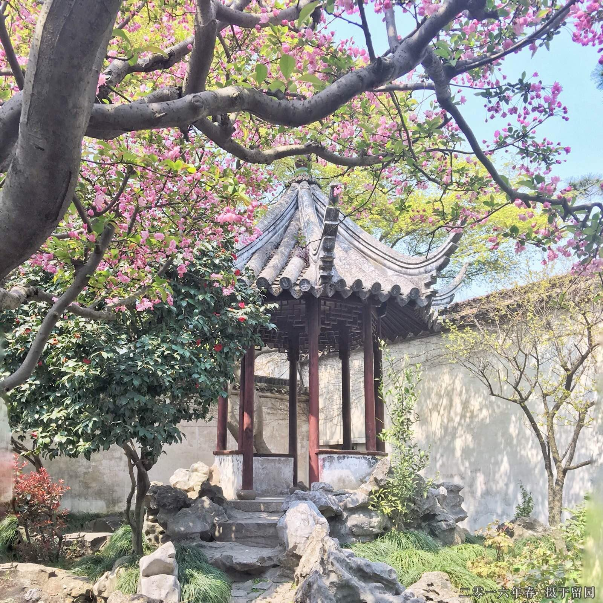
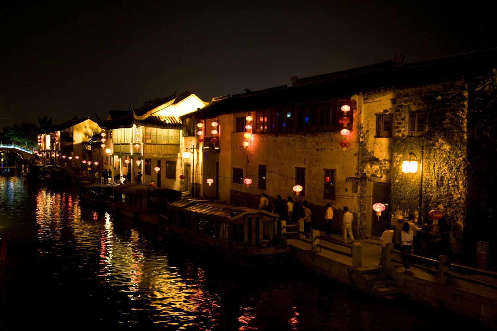
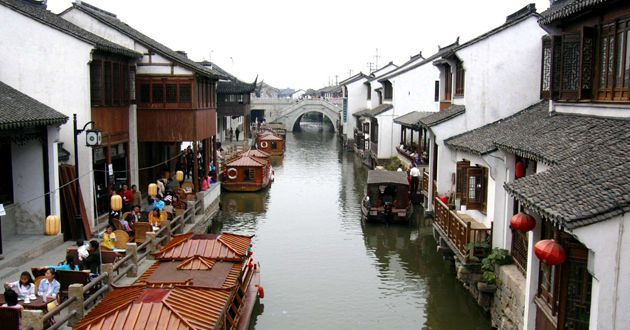

苏州美景




苏州概况
苏州，古称吴，简称为苏，又称姑苏、平江等，位于江苏省东南部，
长江三角洲中部，是江苏长江经济带重要组成部分。
东临上海，南接嘉兴，西抱太湖，北依长江。
地处东经119°55′～121°20′，北纬30°47′～32°02′之间。
全市地势低平，平原占总面积的54.8%，海拔4米左右。丘陵占总面积的2.7%。
苏州属亚热带季风海洋性气候，四季分明，雨量充沛。种植水稻、小麦、油菜，
出产棉花、蚕桑、林果，特产有碧螺春茶叶、长江刀鱼、太湖银鱼、阳澄湖大闸蟹等。
苏州是中国首批24座国家历史文化名城之一，有近2500年历史，是吴文化的发祥地。苏州人多属江浙民系，使用吴语。
苏州园林是中国私家园林的代表，被联合国教科文组织列为世界文化遗产。
截至2015年，苏州辖姑苏区、相城区、吴中区、虎丘区和吴江区，代管张家港市、常熟市、太仓巿和昆山市，全市面积8488.42平方公里。
2016年1月，苏州被住房和城乡建设部评为首批“国家生态园林城市”。2016年2月，苏州被国家旅游局评为首批国家全域旅游示范区。
大家印象
城市很秀气，风景和人文感觉都很好。知名旅游景点非常多，苏州园林则是最有名的景点。
山塘街夜景很美，很有特色，观前街很热闹小吃也多。温婉的江南水乡是一座适合生活的安逸城市。
走进苏州
苏州，古称吴、吴都、吴中、东吴、吴门，现简称苏。苏州自有文字记载以来的历史已有4000多年，
公元前514年建城，是中国首批24个历史文化名城之一，中国重点风景旅游城市，也是4个中国重点环境保护城市之一、长江三角洲重要的中心城市之一。
隋开皇九年（公元589年）始定名为苏州，以城西南的姑苏山得名，沿称至今。苏州是江苏省的经济、对外贸易、工商业和物流中心，
也是重要的文化、艺术、教育和交通中心。 苏州旅游景点众多，旅游资源丰富。
其中苏州以园林与水乡古镇名闻天下，苏州古典园林的历史可上溯至公元前6世纪春秋时吴王的园囿。“苏州园林甲天下”，
苏州园林是建筑、山水、花木、雕刻、书画的综合艺术品，集自然美和艺术美于一体，构成了曲折迂回、步移景换的画面。
苏州旅游景点除了著名的苏州园林外，还有众多的苏州古镇，有吴江同里、震泽、昆山周庄、锦溪、千灯、常熟沙家浜、古里、太仓沙溪、浏河、吴中区甪直、光福、木渎、东山、高新区的镇湖等镇。
苏州旅游局现正发展村的旅游，如吴中区的三山岛、明月湾、旺山，高新区的树山，相城区的莲花岛、常熟的蒋巷等村，这些村以优美、质朴的景色和可口的吴地农家菜，正成为苏州旅游的新磁场。
苏州旅游景点既有园林之美，又有山水之胜。寺观名刹，遍布城乡；文物古迹，交相辉映。加以文人墨客题咏铭记，作画书联，更使之名扬中外。灵岩山、天平山、洞庭东山和西山、邓尉山、穹窿山、
白马涧、常熟虞山、昆山玉山、张家港香山等处，都是天然的风景胜地。苏州乐园、金鸡湖摩天轮公园、阳山温泉、镇湖刺绣街、常熟服装城等现代旅游设施业也吸引了众多海内外游客。
最佳季节：3-5月，9-10月。苏州属亚热带季风性气候，气候温和湿润，四季分明，尤以春秋旅游最佳。
随着季节变换，苏州园林的色彩也随之变化，并有相应的花卉展览。
苏州属北亚热带季风气候，气候温和、湿润，四季分明随着季节变换，
苏州园林或繁花似锦，或碧树浓荫，或银装素裹，展现出万千美态。
但不同季节的各种时令美食，如枇杷、杨梅、塘藕、大闸蟹、腌笃鲜轮番上市，大饱眼福之余还能大饱口福。
建议游玩：2-6天
三日游
DAY1 虎丘 -留园 -寒山寺
DAY2 拙政园 -苏州博物馆 -狮子林
DAY3 同里
四日游
DAY1 虎丘 -留园 -寒山寺 -寒山寺素斋馆
DAY2 网师园 -观前街 -平江路
DAY3 拙政园 -苏州博物馆 -狮子林
DAY4 同里
五日游
DAY1 虎丘 -留园 -寒山寺
DAY2 苏州乐园
DAY3 网师园 -观前街 -平江路
DAY4 拙政园 -苏州博物馆 -狮子林
DAY5 同里
上海、苏州六日游
DAY1 南京路 -外滩 -东方明珠 -正大广场商业中心 -滨江大道 -南京路 -外滩 -东方明珠 -田子坊
DAY2 拙政园 -苏州博物馆 -朱鸿兴面馆(齐门路店) -平江路
DAY3 虎丘 -留园 -观前街
DAY4 寒山寺 -山塘街 -古运河夜游
DAY5 狮子林 -金鸡湖
DAY6 沧浪亭 -网师园